12 MiniRun6.5 RHC files · 2368 spills · 9619 ν · 3212 reco ixns · ROOT caf::StandardRecord via libduneanaobj · loose 166 matched / tight 4 matched
common.ixn.dlp.part.dlp is vector<vector<SRRecoParticle>> with SRVector3D start/end/p as memberwise AsArray<std::array<float,3>>. uproot 5.7 raises NotImplementedError: memberwise serialization of AsArray in caf::SRVector3D. Original analyze_full.py could only do fiducial + ntracks>0 proxy and had fake stubs [[{'pdg':13}]*7].
for each TFile/TTree entry (spill):
truth loop: rec.mc.nu[k].{E, vtx, mode, iscc, nprim, prim[].pdg/start_pos/end_pos/p}
reco loop: rec.common.ixn.dlp[i].{vtx, truth/truthOverlap, part.dlp[j].{primary,pdg,E,p,start,end}}
→ fiducial → track → MINERvA → truthOverlap argmax → matched ν
→ hadron_mult / length / angular truth vs reco
Loop prim[], same |start_pos-end_pos|>3, same pdg groups, cosθ = p.pz/|p| (L2932-2940).
| Step | Cut | Ref | Loose | Tight |
|---|---|---|---|---|
| Fiducial | 5<|x|<59, 5<|z|<59.5, |y|<57 on ixn.vtx | L2461 | yes | yes |
| Track | primary && |start-vtx|<5 && len>3 for pdg 13/2212/211/321, minTrkLength=3 | L2573/2598 | yes | yes |
| MINERvA | Exiting |z|>58 → downstream start_z>0 && (z>60) loop nd.minerva.ixn, lenMin>10, dot>prev && |ΔY|<15 && |ΔX|<15 && |Δatan|<0.06, pass maxDotDS>0.99 (mnvOffset 0,0 for MC) | L2625-2785 | proxy (exiting only) | exact |
| Truth match | truth/truthOverlap argmax → mc.nu[best], |recoVtx-trueVtx|<5 per axis, targetPDG==Ar, iscc | L2474-2504 | yes | yes |
Loose = stats for length/angular (196μ/87p/35π reco tracks). Tight = physics signal — rare downstream MINERvA match, as in nominal_mc.cc requireMinerva=True.
From 05_Agentic_Workflows/ (no Polaris, ~15s for 12 files):
/Users/zdjurcic/miniconda3/envs/dune_root/bin/python caf_analysis_code/local_full/analyze_verified.py # → plots_verified/*_verified.png + cutflow_verified.json (166 matched, 135 CC/31 NC) /Users/zdjurcic/miniconda3/envs/dune_root/bin/python caf_analysis_code/local_full/analyze_verified_minerva.py # → plots_verified/*_minerva.png + cutflow_verified_minerva_tight.json (4 matched, 4 CC) # Legacy proxy (no SRRecoParticle, .venv): python caf_analysis_code/local_full/analyze_full.py
Outputs land in caf_analysis_code/local_full/plots_verified/ and are copied to plots/. Both scripts need deps/duneanaobj/libduneanaobj*.so already built.
Edit the constants / functions at the top of either analyze_verified*.py (one constant + one rerun, no recompile unless you add a new caf:: class):
| What | Where | Example change |
|---|---|---|
| Fiducial bounds | if not (abs(vx)>5 and abs(vx)<59 ...) | Change 5 / 59 / 57 / 59.5 |
| Track length / vertex | minTrkLength = 3.0, diff>5 | 3.0 → 5.0, 5 → 3 cm |
| PDG groups | abs(pdg) in (2212,13,211,321) | Remove 321 for p/π only |
| Hadron def | if abs(pdg) in (2212,211,321) | Include/exclude K |
| MINERvA loose↔tight | passes_minerva_tight() vs has_exiting | Swap the if passes_tight: else: continue block |
| Tight thresholds | passes_minerva_tight() | 0.99→0.995, 15→10, 0.06→0.04, lengthMin>10 |
| Offsets | mnvOffsetX/Y | 0,0 for MC; -10,5 for data (L1989) |
| Truth window | abs(vx-tvx)<5 | 5→2 cm, or add targetPDG==1000180400 gate |
| Bins / files | bins_Enu = np.linspace(0,20,50), files[:12] | 0,20,50 → 0,10,40, drop [:12] for full |
After edits: rerun the same one-liner — PNGs overwrite. Adding a new caf:: class → extend LinkDef_full.h and rebuild the two rootcling+g++ lines.
Blue = truth (matched ν), orange = reco via real part.dlp. “Tight” is MINERvA exact; loose gives the physics shapes below.
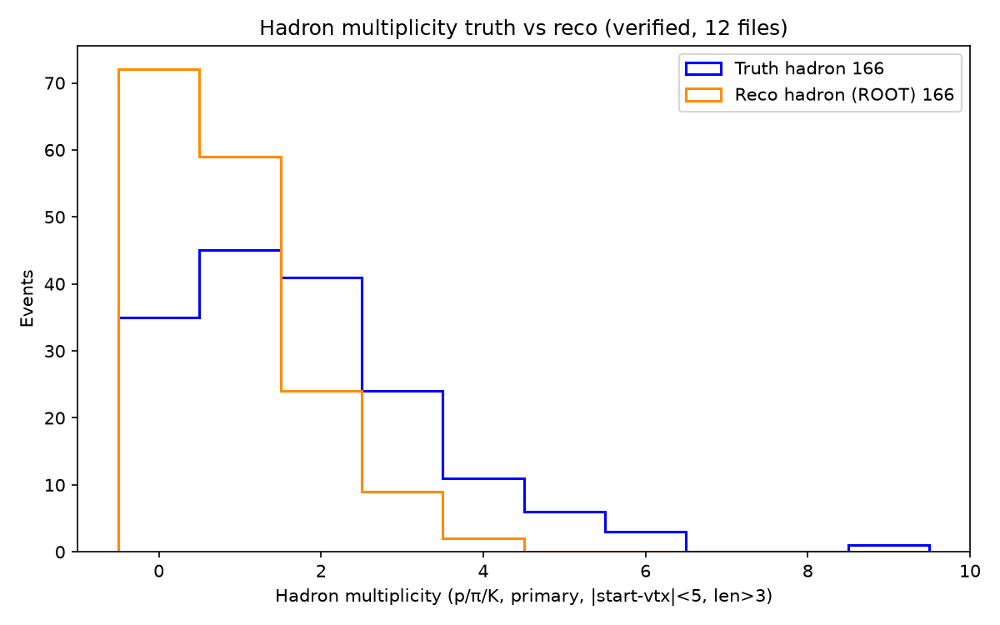
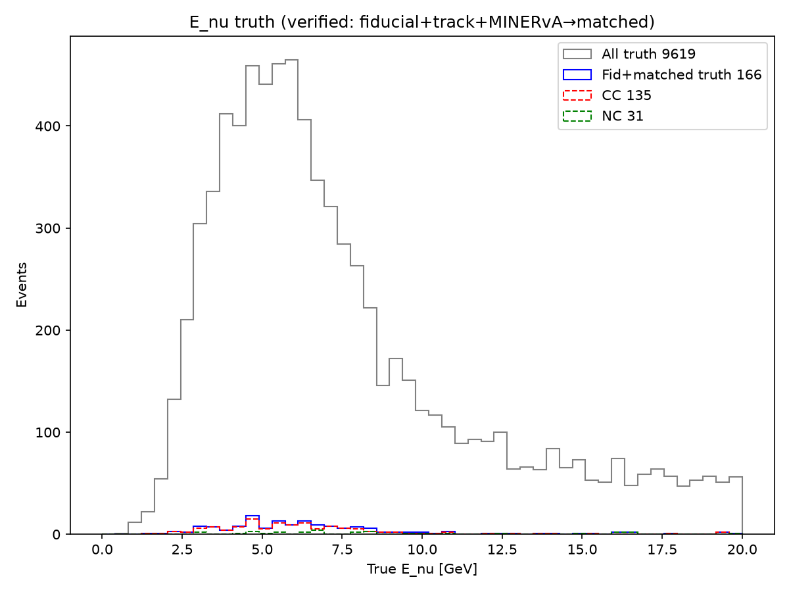
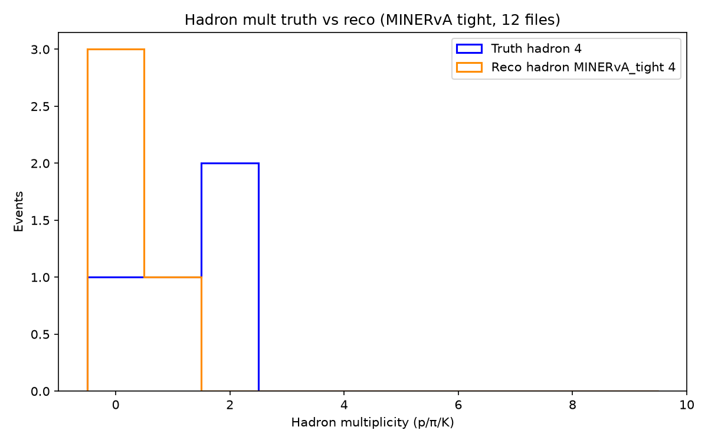
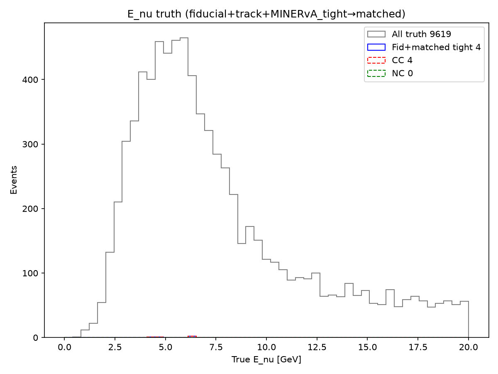
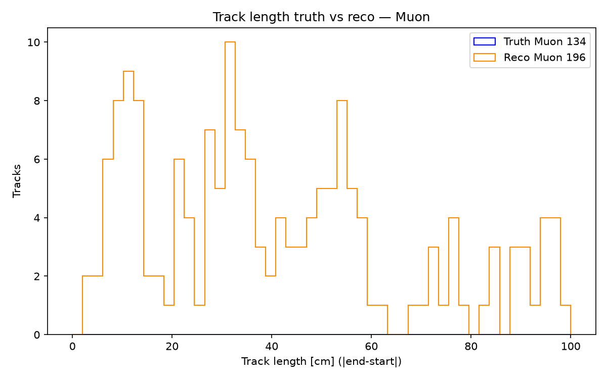
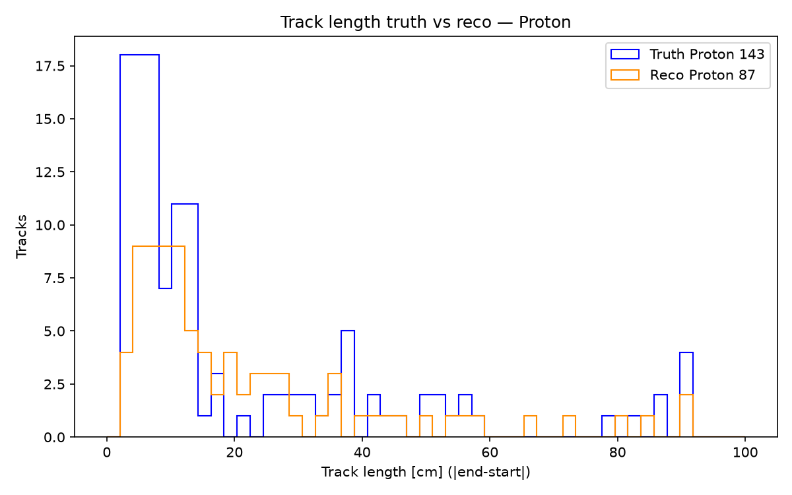
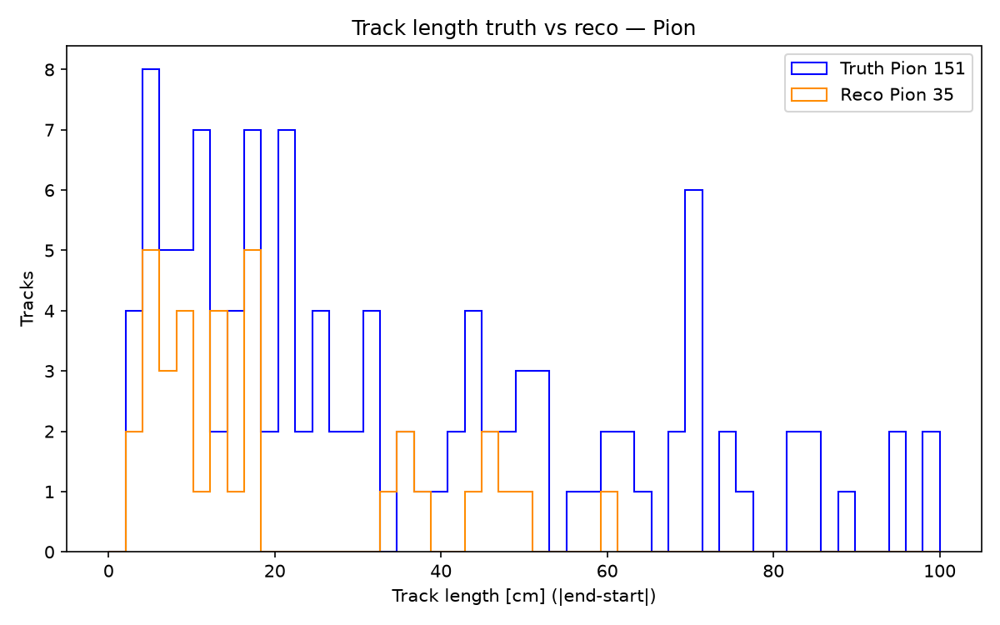
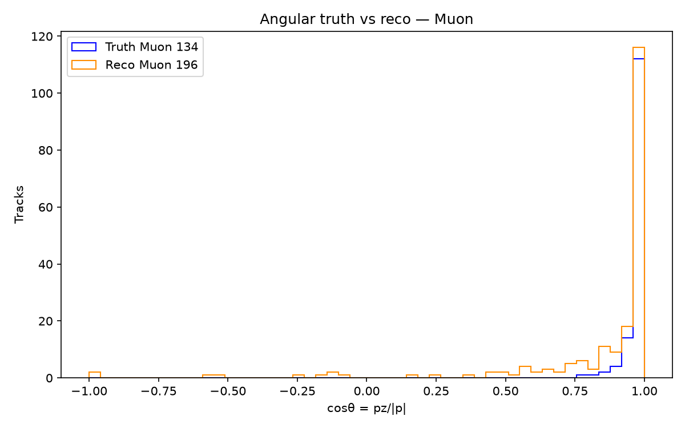
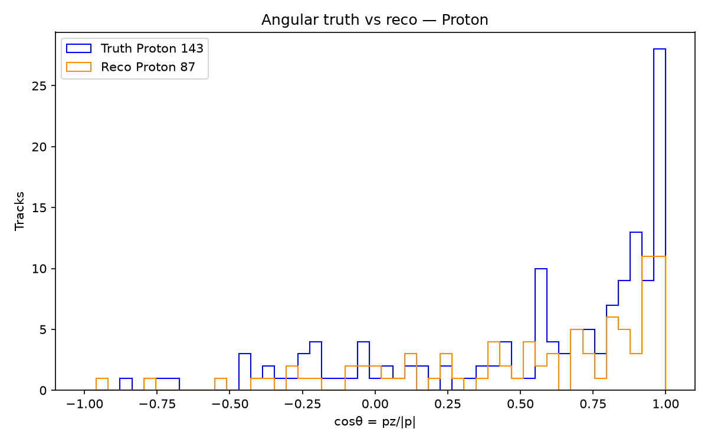
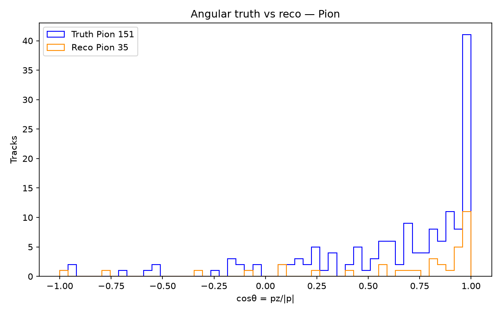
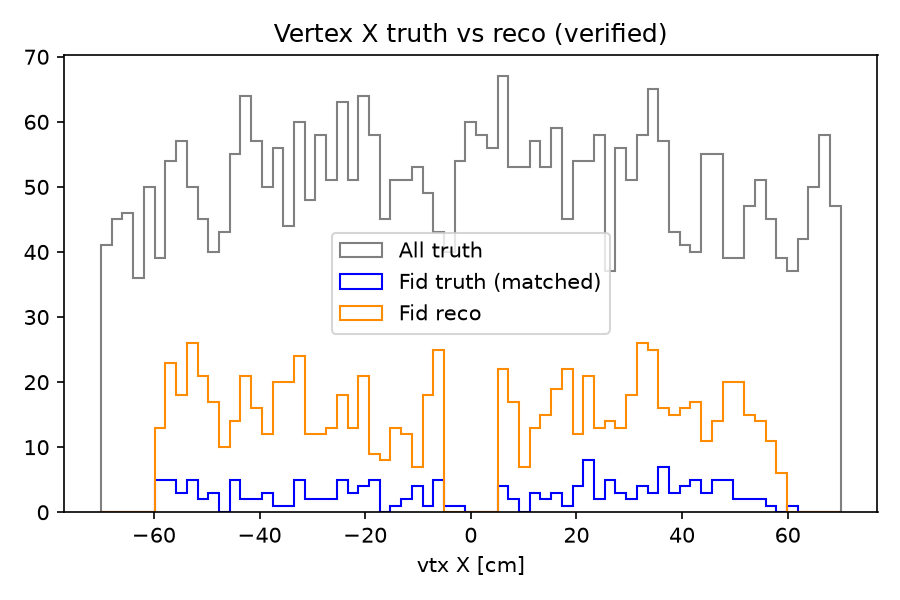
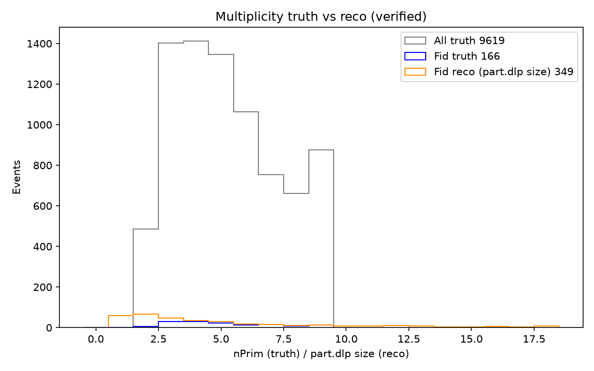
| Stage | Loose | Tight (nominal) |
|---|---|---|
| total_spills / total_nu / total_ixn_reco | 2368 / 9619 / 3212 | 2368 / 9619 / 3212 |
| fiducial_reco / fiducial_truth | 868 / 205 | 868 / 205 |
| track (real primary+Δvtx<5 len>3) | 349 | 349 |
| MINERvA | 295 loose (exiting) | 4 tight (maxDot>0.99) |
| matched (truthOverlap argmax + |Δvtx|<5) | 166 (135 CC / 31 NC) | 4 (4 CC / 0 NC) |
| hadron_mult reco entries / length μ/p/π | 166 / 196/87/35 | 4 / 8/1/0 |
Proxy check: old analyze_full.py (ntracks>0) gave 579 track / 163 MINERvA / 162 matched — overcounts vs real track cuts (349). Entry 1 sanity: 12 part.dlp with correct pdg/len/cosθ persists after edit.
total_spills 2368, total_nu 9619, total_ixn_reco 3212 fiducial_reco 868, track 349, matched loose 166 (135 CC/31 NC) tight 4 (4 CC/0 NC)
Generated 2026-11-16 — rerun the two one-liners above to regenerate this doc’s plots after any selection change.